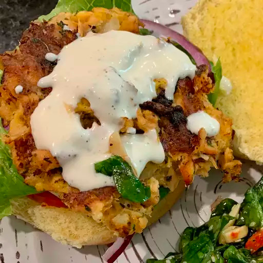

A quick, delicious and nutritious way of serving up canned salmon. You can enjoy this with or without the dressing, in a hamburger bun, or with a salad.
In a medium bowl, mix together the salmon, eggs, parsley, onion, breadcrumbs, 2 tablespoons of lemon juice, 1/2 teaspoon of basil, and red pepper flakes. Form into 6 firmly packed patties, about 1/2 inch thick.
Heat the oil in a large skillet over medium heat. When the oil is hot, add the patties, and cook for 4 minutes per side, or until nicely browned.
In a small bowl, mix together the mayonnaise, 1 tablespoon of lemon juice and a pinch of basil. Use as a sauce for your patties.